教你炒股票108：何谓底部？从月线看中期走势演化
(2008-08-29 09:15:01)
何谓底部？这里给出精确的定义，以后就不会糊涂一片了。底部都是分级别的，如果站在精确走势类型的角度，那么第一类买点出现后一直到该买点所引发的中枢第一次走出第三类买卖点前，都可以看成底部构造的过程。只不过如果是第三类卖点先出现，就意味着这底部构造失败了，反之，第三类买点意味着底部构造的最终完成并展开新的行情。当然，顶部的情况，反过来定义就是。
此外，用分型的角度同样可以给出底部的概念，只是这粗糙一点，对一时把握不了精确走势类型分类的，这是一个将就的办法；此外，一般性分析中，这方法也可以用，因为对把握大方向已经足够。
站在分型的角度，底部就是构成底分型的那个区间，而跌破分型最低点意味着底部构成失败，反之，有效站住分型区间上边沿，就意味着底部构造成功并至少展开一笔一上行情。其实，这都不是什么新鲜内容，但这里统一说出来，还是有好处的。同样，顶部反过来就是。
注意了，有了这个定义，就一定要搞明白，不是在底部的区间上买，而是相反，应该和中枢震荡的操作一样，在区间下探失败时买，这才是最好的买点，连这都搞不明白，就白学了。此外，底部是有级别的，日线图上的底分型，当然就对应着分型意义上的日线级别底部。
现在就有一个现成有意义的例子，2008年8月这月K线基本走出来了，显然，9月是否能构造出底分型，关键是看这个区间（2284，2952），其中2284点是绝对不能破的，一旦破了，就马上宣告月底分型至少要到10月后才有戏。因此，即使9月没到，我们已经可以有一个大致的操作强弱分类空间了，只要回2284点不破的任何分型意义上周级别以下走势，都必然成为一个良好的短线买点，而且其中可以充分利用类似区间套的方法去找到最精确的买入位置。
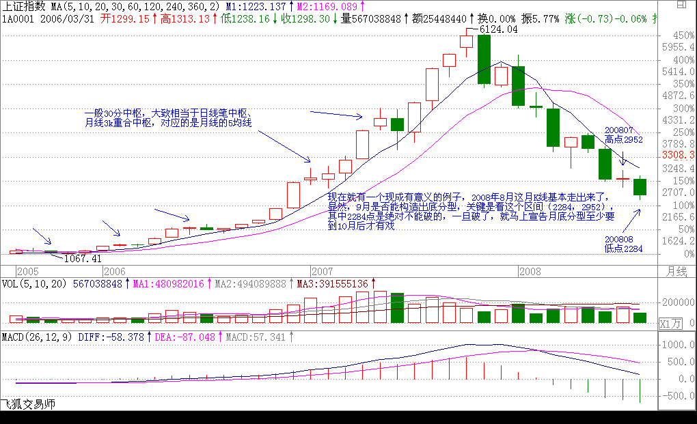
同样，马上可以断言的是，在10月有效确认站住2952点前，月线意义上的行情是没有的，最多都只能看成是分型意义下月线级别的底部构造过程。因此，这对我们操作参与的力度与投入就有了一个很明确的指引。
当然，对于一般投资者，月线图太大了，因此可以看周线图，例如，本周与上周比，到目前为止就是一个包含关系，因此，到下周是关键的能否构成底分型的日子，而真正要走出底部，那还需要对（2284，2601）突破有效的确认，也就说，在中秋前，要确认一个分型意义下的周线行情是不可能的，除非今天，本周最后一天能突然突破2523点，否则就绝对不可能了。
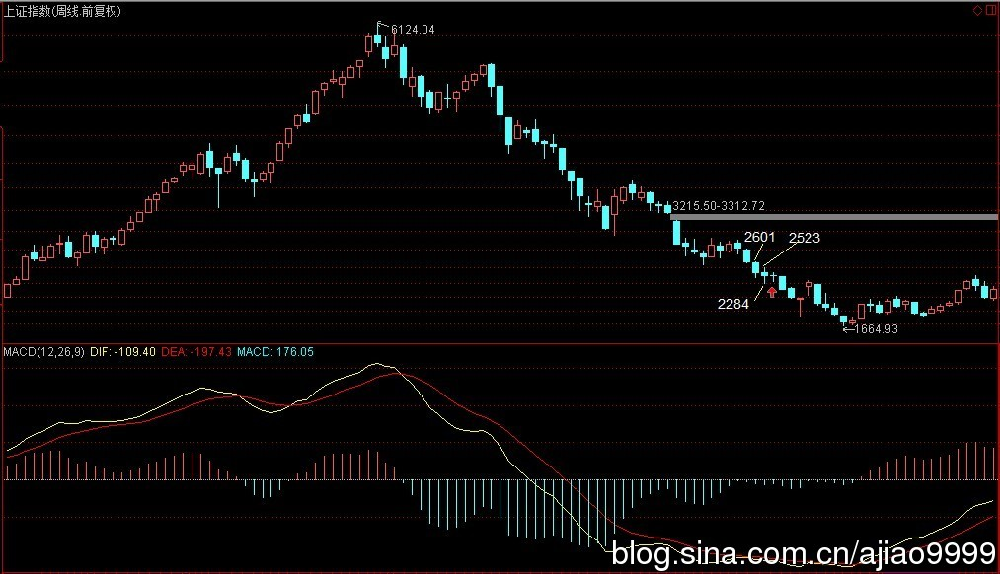
从更短的日线看，目前无非就在8月18日开始那底分型引发的底部构造中，是否最终有效，就看（2284，2455）区间走势的演化了。
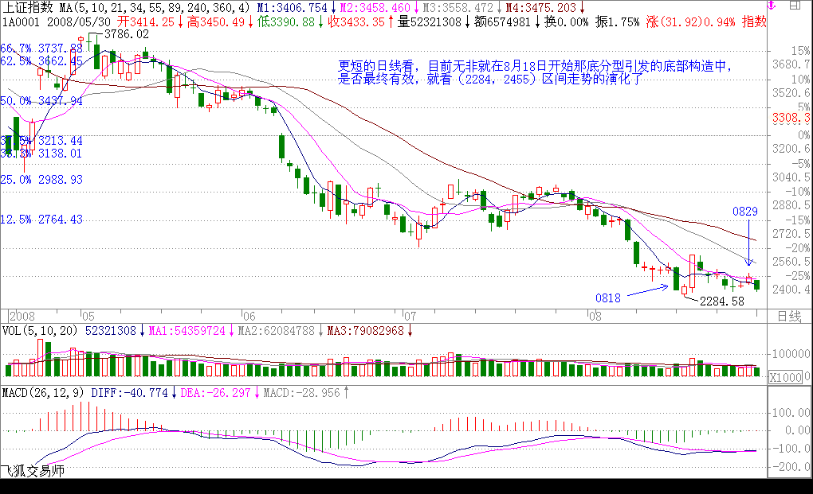
操作其实很简单，一个基本的原则就是，任何走势，无论怎么折腾，都逃不出这个节奏，就是底、顶以及连接两者的中间过程，因此，在两头的操作节奏就是中枢震荡，只是底的时候要先买后卖，顶的时候要先卖后买，这样更安全点。至于中间的连接部分，就是持有，当然，对于空头走势，小板凳就是一个最好的持有，一直持有到底部构造完成。
而有技术的，根本就不需要什么小板凳，按操作级别，分清楚目前是三阶段中的哪一段，然后日日是好日，时时是花时，不赚钱那真是脑子有水了。亏钱都是错误操作引起的，不断反省，才会有进步的。
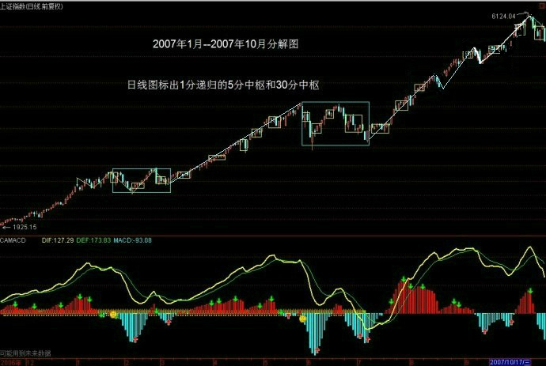
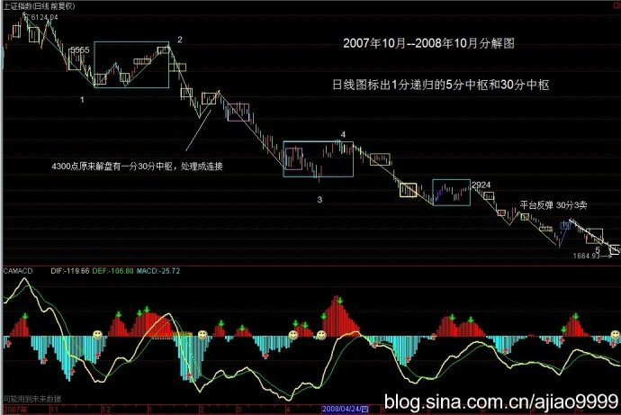
超短线就看周一及2403点
(2008-08-29 15:11:47)
今天，继续周末消息市，由于外围造好，就有了比较强的盘面。现在，最基本的，超短线就看周一能否站住2403点，能就极大机会延伸出日线图上的向上笔，2523点是下一个重要位置。更大时间的分析，请看今早的文章。
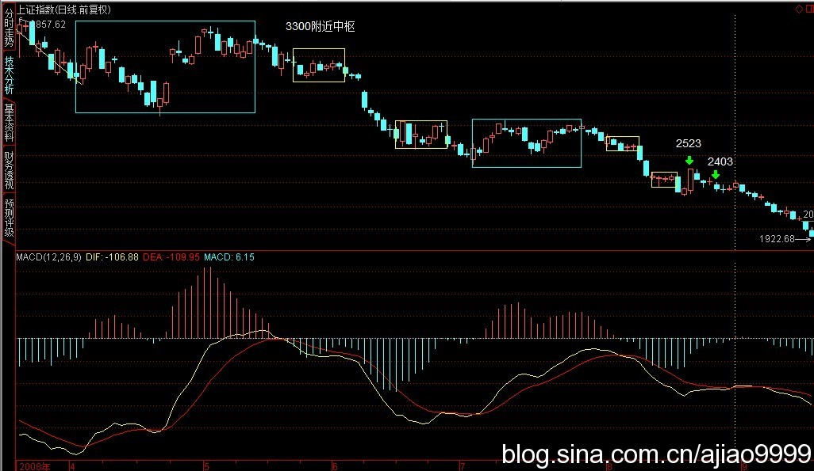
大盘当然已经暗潮汹涌，你看中信证券，大盘没动，也快上来30%了，没人搞是决无可能的。其他不少中字头的也如此，但是，这搞是有分寸的，就是万一管理层真不给面子，翻脸就可以不玩，成为新的下跌动力。现在的大资金，只要比配合理，都是十分自如的，一有机会可以狂飙突进一次，没机会、不给面子就继续砸出机会，谁怕谁呀？
总之，现在不要一边思维，有能力的要多活动，大盘在大的底部构造中，机会多多，来回几次，比来一次大的都好玩，最后再在大的上面狠咬一口，那又够一年半载消费了。
另外，有一种错误的思维一定要消灭，否则死无全尸。千万别有等下一大级别再如何如何的想法。10000点跌到6000点反弹到8000点，然后到2000点再反弹到4000点，你说相对6000点到8000点，2000点到4000点是不是大扬？但这有什么用？不会分段操作，一味死扛的根本不该到股票中来，股票就是分段操作的，下一段就算有天大的宝贝，都和当下这一段无关，任何的操作只关心当下的苹果，吃到就是英雄，否则就是垃圾。
人，总爱编造一些故事来给自己一个支持的理由，那都是弱者的表现，在本ID这里，只有当下的走势，任何所谓的预测，都是闲谈，活动一下唾液的分泌功能，这已经说过无数次，如果还不明白，那真不能股票了。
而实际上，对于真正的操作者，本ID每天后面写的，等于是一个操作的完全分类，任何操作必须以完全分类为基础，否则，只有死路一条，也说过无数遍了，又有多少人真正机械地做到？
周末中医一把，本ID的绝对前无古人，有时间可以先把抽象代数复习一下，本ID的中医是以抽象代数为基础展开的，当然其中不会用到相关术语，但思路是一样的，这才能构造真正的中医基础。
股票是几何的，医学是代数的，世界就是这么简单，如此地数学了。
先下，再见。
退一步海阔天空
(2008-09-01 15:56:14)
关于本ID坐骨神经的最新进展，后面有附录。来本ID这里，首先就要有最基本的科学精神，科学精神你都做不到，还如何能破科学而进入更高的境界？本ID这里一是一、二是二，只看实际效果。
至于股市，周末搏消息的又一次失望，因此就自然有了今天的走势。对消息，不能急，你想大爷们的工作效率，就算真想干点什么，能快得了吗？退一步海阔天空，没什么不好的。
纯技术的角度，已经明确分析过了，就是要有较大行情，必须月线闹出底分型来。如果本月初破上月底，并不是什么世界末日，反而使得这底分型更有力点，行情早一月晚一月其实并没什么大不了的。试想，如果本月不破底而硬搞一个分型，那么本月就需要拉一长阳，你凑在图上看看，总让人感觉不舒服不塌实，现在硬上去，弄成包含关系的可能更大，这样，后面反而会使得真正底分型来临时间更遥远。所以，有时候急了并不是什么好事情。
从纯美学的角度，10月见底是最美的，因为刚好对应一年周期，顶和底一个完美的周期，当然，9月其实也可以，因为周期是可以正负一两个月的。站在这个角度，在月初砸一次破一次，对长期走势来说是件大好事。当然，这只是从美的角度说，至于市场怎么选择，市场说了算，实际操作中，根本可以不搭理这些事情。
下午有朋友打电话过来，说他到了一中央级最重要之一的经济管理部门的杂志当头，那杂志是每个大国企以及大企业的头都会看的，希望本ID给他们写点什么。本ID有更好的渠道，本对这事没兴趣，想想，这可能也有点用处，专门写就算了，有些老东西改装一下弄过去就可以。各位有什么好的想法，也可以说说。本ID和他明确说了，他也知道本ID从来很少给什么杂志写东西，就算偶尔为了加大吹风力量弄的，也是闹着玩的，所以和他的合作不可能固定，本ID也不要他的稿费，反正想到有东西给他，他能用就用，不用就算，这样比较自然点。
他专门问了本ID对调整的看法，因为他知道本ID6100点做空以后一直不感冒这市场，所以问本ID调整还有多长时间。因为是朋友，就直说了。如果真要重新来过，那是N年以后的事了，现在唯一可以等待的是MACD在月线上回0轴后产生的中级回拉，这时间也快到了，狠的，就等17、18月，也就是明年3、4月开始；不太狠的就是10月前后了，这关系到周期运行的问题。至于是什么时候，关键是看管理层的作为，如果吊儿郎当的，那就狠吧，一切都是因缘和合，可没有任何必须的东西现在就规定行情如何如何。
这里说的是大的走势，至于周线以下级别的走势，更没什么可分析，以前都说得很明白了，没必要预测什么，看图，那里什么都有。
好，关心本ID坐骨神经的朋友，请看过来。
奇人那一下很有效果，但效果没有持续到足够让本ID满意的程度。这里有一个客观因素，就是酒店的床太软，本ID要求更换木板床，说没有，晕。什么治疗后，一睡那床估计都要反复。闹不好，本ID要在地上睡了，在地上铺好了，可能会好点。
昨晚，比较痛苦，打了两针竟然也没起作用，后来还是本ID自己解决了问题，把穴位用东西封上，结果一晚安稳，当然，奇人把一些东西弄回去了也是很关键的，否则本ID的招数也用不上。总结一下，奇人弄好后，一是没睡到正确的床上，二是大采购过于劳累，把刚弄正确的位置又搞偏了，所以这次先用本ID的招数控制着，等奇人两天后来再最终处理一下。
至于今晚如何，天知道，不过本ID已经开始喜欢这游戏，就是如何当下地处理好这问题，然后得到一晚的安睡，这是多有趣的事情，目前状态可以，就看晚上了。
5日线控制超短线走势
(2008-09-02 15:15:15)
今天差点没破底，然后扭捏了一天，但深圳破了，只要没有半夜鸡叫之类突发事件，破是迟早的事情，快的明天开盘就实现。上海现在的超短线走势就看5日线了，5日线站不住，这轮杀跌就没完。所以，如果懒的，就看5日线足够。
其实，大盘现在走成怎样都没什么意义，因为没量，就算现在一直阴跌下去，一旦回头，很快就可以回到目前的位置。关键还是月底分型的最终结果，其他都没多大意义。
本ID很高兴能一直写这博客，例如现在，孤身一人，在这每天写两句，总有一种温暖的感觉。十分感谢各位的建议，这让本ID感到和各位同在经历一些事情的感觉，很好。
大的说，现实中的人都是可怜之人，否则就不会因业力牵引而成就人的生涯了。人，有苦有乐，乐最终还是苦，在本ID看来，所有人都如同无端流放于荒野的一群，互相之间能相互帮助，一定是人间最美的事情。所谓同体大悲，无论你是谁，最终的意义上，和本ID有着共同的共业而因此落于地球之上，这是多大的因缘，所以，能就此因缘而共同走出这生死迷局，这才是人生真正有意义的事情。
本ID的心和各位是同在的，同悲同乐，无论谁，有幸突破这生死轮回，都无一例外地广渡，这里，任何的争吵算计都如此无聊，站在生命的根本上，人生很多事情都会放下的，您呢？
不破不立，反弹可期
(2008-09-03 15:14:03)
大盘终于破底，这使得月线底分型最快也要到10月才能构成，但站在短线的角度，反弹反而有了技术基础。当然，这类反弹都是纯技术性质的，属于短跑型，能否参与就看各自的技术了。
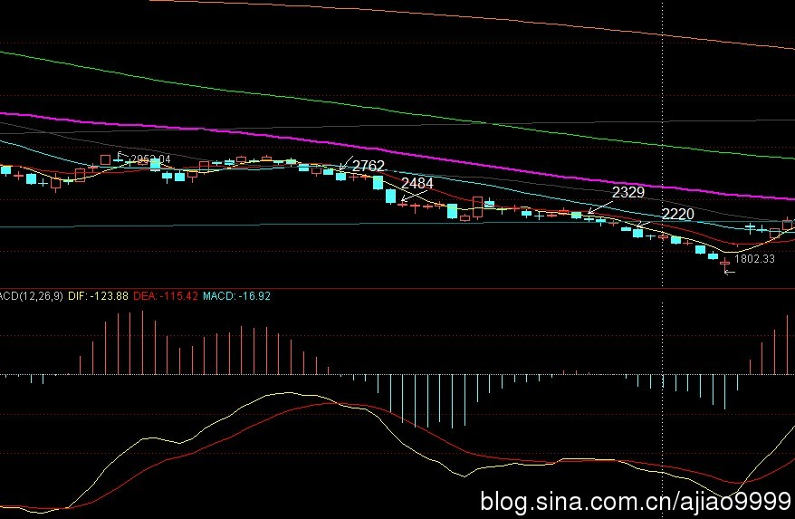
2329点是短线关键压力，站不上去将继续弱势，从纯心理的角度，如果反弹前能有一段急促下跌，那么其后反弹的力度将更有操作性，但目前，破底后追杀的动力不足，市场完全进行一种麻木状态，这时候，行情没有太大的稳定性，最终还是归于折腾。
大盘真没什么可说的，本ID这几天状态一般，主要是要和坐骨神经斗争，暂时是棋逢对手，还没分胜负。人生中最难熬的大概就是这种状态了，首先你不知道平衡什么时候打破，而你又不能松懈，否则平衡马上就破了，所以只能熬着。这就如同现在的大盘，就是熬着，谁能最终熬出头，就是胜利者。
但在熬之中，胜利只是一种安慰，唯一可能的，只能去欣赏、享受这种煎熬的状态。站在审美的角度，熬的状态其实真的很有趣，那种无声的生命相搏，不知道后果，只能一路前行，没有退缩的机会，这种状态在人类历史中成就了无数的奇迹，想想贝多芬，几十年不断严重的耳聋，一种没有边际的熬，最终成就了最伟大的作品。真正的作品，都是生命熬出来的汁液，所以才如此纯美。
本ID别无选择地一定继续熬下去，坐骨神经、癌症等等一一熬破，好一场生命的游戏。
对经济调整的严酷性决不能掉以轻心
(2008-09-04
15:30:25)
股市整天说也没意思，今天一个包含关系日K线，基本的分析和昨天是一样的。
说点别的，就有了下面的内容
现在，无论世界还是国内经济，都进入一个较大级别的调整，这点已经是无须讨论的现实。经济有涨有跌，潮起潮落，本是正常的事情，问题的关键在于，如何用最好的策略对应对这不可避免的调整，使得最终的调整痛苦程度减到最低，甚至就此借力达到调整总体经济结构，培育新的经济增长点，为新一轮的经济上升做好充足的准备。而要做到这一点，首要的，必须对经济调整的严酷性有成分清醒的认识，任何的掉以轻心都可能导致灾难性的结果。
现在有一种极为有害的观点，认为现在资产价格已经大幅度调整，其他经济指标也没有进一步恶化，因此本轮调整将很快过去。而事实上，任何的有一定级别的经济调整，最终的资产价格都不是刚好回到所谓合理的水平，而是大幅度地折让，这正如任何一次资产价格的上升热浪，总要把价格抛向远离合理水平的疯狂状态，而下跌时的道理是一样的，市场总是以不理性的行为为其基础，而这种非理性的状态才是最有杀伤力的。任何以资产价格已经充分调整为理由，都不足以说明经济调整的结束，甚至往往意味着一轮更残酷的非理性下跌的开始。
而这轮的经济调整，从走势形态上看，并没有出现加速恶化的状态，而是在不断的犹疑中徘徊，而这种状态，往往意味着更大的风险还在后面，一旦这种状态被打破，经济不可避免地进入加速调整中，在这加速调整还没有出现前，任何对经济调整结束的断言都是可疑的。
更重要的是，一次较大规模的经济调整过后，总是有一段漫长的恢复期，而这恢复期的杀伤力，往往比调整期还要严重，那是一种磨和耗的状态，一种没有边际的、失望与希望交替的煎熬，那才是最为惨烈的，能否耗过这段时期，决定了经济下一轮增长能否顺利起步并占有最有利位置，因此，即使调整结束了，也决不能掉以轻心。
而这轮调整，在世界范围内，越来越显示出其级别之大，甚至有可能是1929年以来最为严重的一次经济调整。而这次调整，同时纠缠了各种政治势力与经济利益的博弈，最终将决定今后数十年世界政治、经济利益的再分配，所以，站在国家战略的层面，是绝对不可以掉以轻心的。经济，从来都是政治的，特别在这全球化的背景下，老的经济格局越来越束缚经济的发展，如何破局、如何在此中谋取最大的国家利益，这才是关键所在。
中国当然有足够的资源与国运在新的世界经济格局中占有更为重要的地位，但这并不是可以不劳而获，这并不是一个已经在天上挂好一定要掉到中国头上的馅饼，要达到此目的，任何的松懈都是不允许的。
而中国整体的经济结构，还远远达不到基本完善的状态，里面还藏有诸多严重影响经济调整顺利过度的结构性弊端，就此，大力调整经济结构，把不合理的结构性弊端清除，理顺整体经济关系，这里有大量的工作需要去完成。
站在资本全球化的大格局中，本次中国经济面临的调整的复杂程度是前所未有的，诸多国际性因素将在其中起着前所未有的作用。而很多因素，并不是中国一国所能控制的，而中国由于完善的整体经济结构并没有完全确立，所以其中存在的诸多漏洞可谓防不胜防，在这种状况下，非系统性风险随时存在，这是最难把控的。
要应付如此复杂的局面，观望、犹豫、甚至随波逐流、坐以待毙都是没有出路的，必须首先确立明确的调整思路，使得调整以尽可能少的代价完成，然后动用一切资源确保调整按照可控的范围内进行，而中国目前的经济状态，完全有能力做到这一点，只是时机不能错失，否则代价极为昂贵。
有足够的理由相信，风雨之后的中国将更有力量，但现在的问题是，必须首先安全平稳地度过风雨，否则光叨唠风雨之后见彩虹，是毫无意义的。而风雨，真正的风雨可能还没真正到来，而我们已经有足够的准备了吗？
2220点决定最终反弹级别高度
(2008-09-10 11:18:07)
下午收盘就要走。所以先说两句。
上周已经明确说过，本周值得关注的就是这个反弹了，一个完美的两小中枢构成的下跌后在早上完成最终背驰，恰好配合上CPI的跳水利好，大盘盘中有了较大反弹。显然，后面受阻5日线，因此，下面的任务是5日线的攻关。但最终决定反弹级别与高度的还是2220点，站住，级别就大，否则就将再次回探。

从最恶劣的情况看，最小级别的升幅已经完成，所以5日线能否攻克是这两天的关键。基本面应该有进一步的好转，如果各方面能配合上，最好的9、10月构成月底分型的过程就能实现，但就不知道某些大爷们是否又出妖蛾子了。
看图作业，多想无益。
一切顺利的话，明天再给各位写帖子了，先下。
5日线继续主宰大盘短线
(2008-09-11 16:14:14)
 转载
转载
终于回到广州，早上5点半到，一到酒店公寓，就知道英格兰队的喜讯，一天心情大好。
股市还是逃不掉5日线，这在昨天中午已经特别强调。这次反弹的技术性由此可见，昨天中午强调最恶劣情况下，最基本升幅已经达到，结果大盘无情选择最恶劣的情况，这是理论所允许，感情所必须接受的。
任何理论允许的情况，就要时刻面对接受，这点是最基本的准则，下面，由于反弹构成较大中枢后继续下跌，(娇：现在这个还真没有。）因此下一次买点就要站在这新级别上看，各位自己去数数在这级别级别上已经有多少中枢，然后该干什么一目了然。
还是那句话，无欲无求，按图作业。
好了，本ID要找录像或重播了，上次搞德国5比1看了现场，这次刚好错过，一定要补课。
先下，再见。
直面更大级别反探(2008-09-12 12:59:29)
住酒店公寓而不是家里真是最正确的选择，这里，一切设备都有，服务又好，省了太多的麻烦，弟弟也专心于本ID的食疗，效果很好，武汉有这里30%的程度，本ID也不至于跑回来了。好事多磨吧。
收盘马上有事，先说两句。小反弹后继续下跌，又不是第一个中枢后的下跌，因此，出现更大级别的反弹基本就是必然的，至少90%多以上的把握。所以，下周，无论周末消息面如何，就算还有下跌破点2000点，一个更大力度与级别的反弹将直面，好好看图把握。
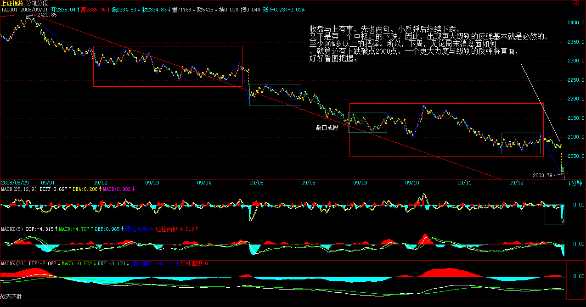
好了，开盘了，先下，再见。
请记住1987年的股灾发生在10月19日
(2008-09-18
10:26:15)
身体没有完全调整过来，但这几天市场风雨飘摇，虽然和本ID没什么关系，正乐见其跌，但还是勉强写两句，让各位心里更明白点。
奥运前，本ID提出断崖论，9月4日又就几位所谓著名经济雪茄的无聊言论给出了对经济调整的严酷性决不能掉以轻心 (2008-09-04 15:30:25)，这些都请重温。而且反复提出，一旦美股跌破10000点将发生什么？这几天看来，那10000点已不是什么钢板。
请记住，1987年的股灾发生在10月19日，今年恰好21年的神奇数字，这也是为什么本ID对经济一直担忧的一个重要理由。短线反弹很快就有，但关键还要看外围，国内从某种程度上已经被美国所左右，这是本ID反复强调一定要避免的，结果还是没办法，天要下雨，随它去吧。
当然，就算股灾，也没什么大不了的，87年之后还不涨了20年？所以，10月见底依然有可能，只是需要更猛烈的暴跌，否则，真要等17月周期了。
短跑好的，注意很快就有的反弹，抢一口就跑。另外，密切注意世界消息面的变化，看这次老美用尽气力能搞点什么？
做人是要讲良心的 (2008-09-19 12:57:06)
本ID知道昨天冒着虚弱发帖子时，很多人在骂本ID，说本ID故意躲起来，本周说反弹结果大跌。上周难道没说2000点是可能跌破的，难道现在出现的不是更大级别的反弹。昨天，半条命的情况下，在早上告诉反弹很快出现，还故意用了黑字，好象还有人有意见？
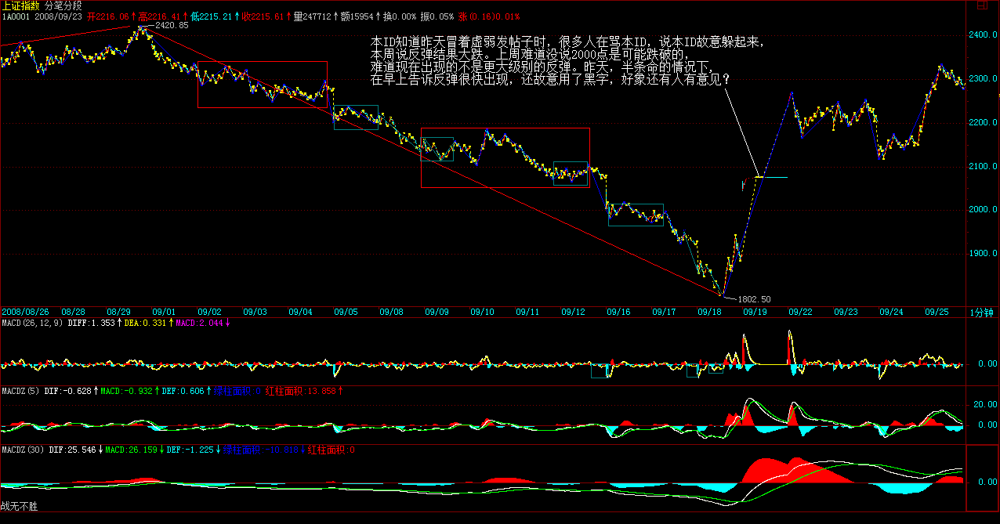
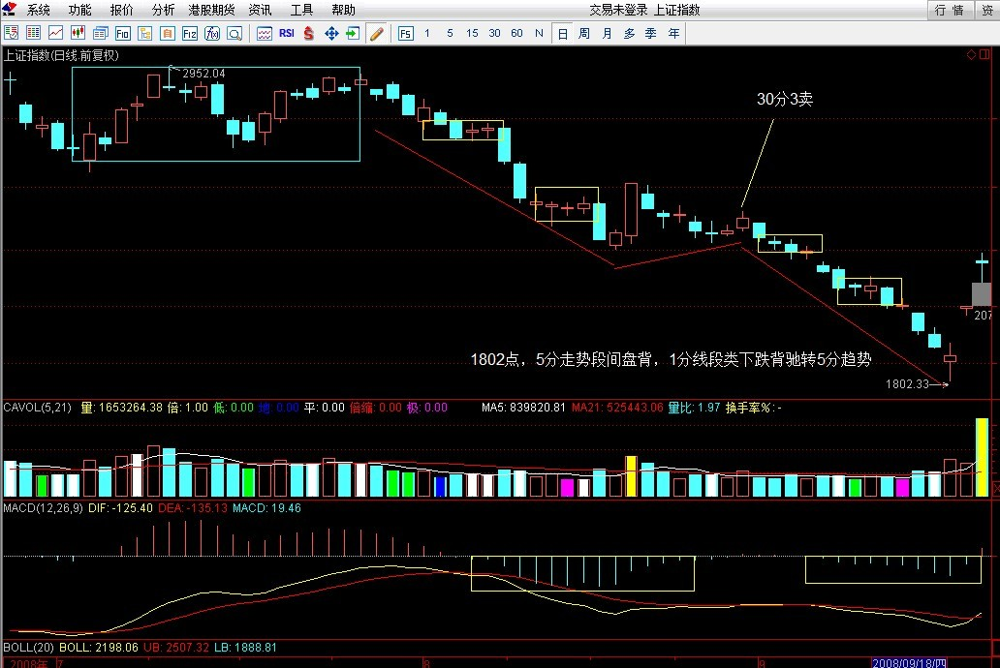
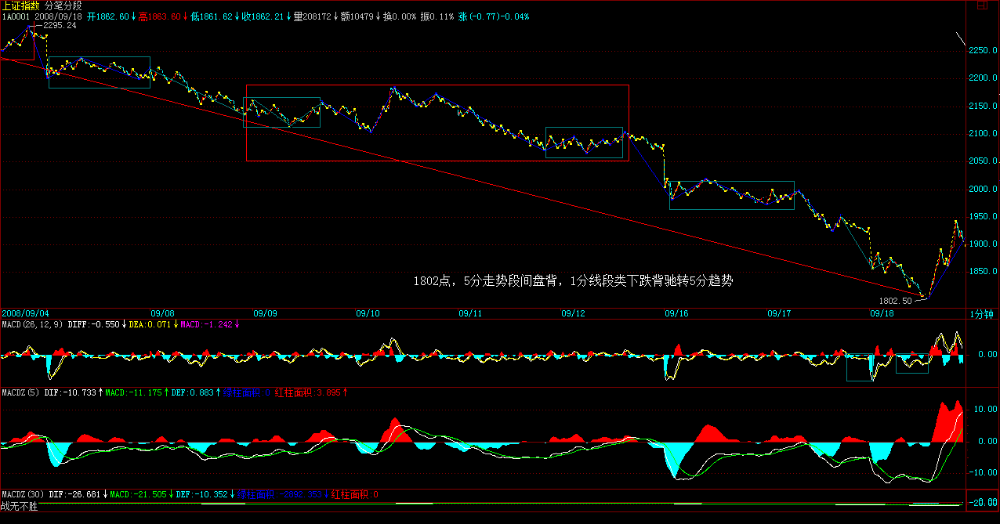
算了，你赚不赚钱和本ID有什么关系？爱什么是什么。
昨天进去的，咬一口就要跑，当然，跑也要看图的，没卖点你跑什么？因为，美国方面并不稳定，所以一定有反复，短跑就是跑了还可以进，一切看图。
以后都自己学技术，自己看图，这种半条命上来暗示的事情永远不会有了。
明天，有帖子，写一些亲人之间的血腥，有时候本ID可能太善良了。
中美联手后的潜在陷阱(2008-09-21 14:16:40)
世界经济最大的秘密之一就是共和党收割财富，烂摊子由民主党收拾。这次中美联手的最终命运取决于大选。反正用的纳税人的钱，小布才不心疼。
联手制造的反弹过后，是否一个平台期还是新一次真正毁灭的开始，其实早被老奴隶主所算计。好戏总是情节百转，有钱就赚，有戏就看，关键脚底要牙买加，这样，怎么都可以了。
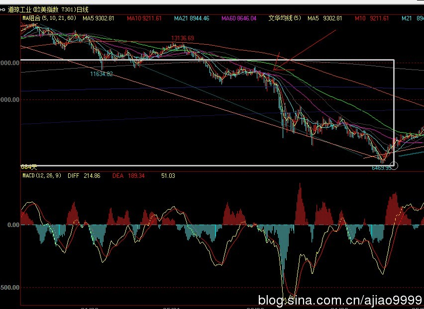
话说多没意义行情级别分析，该说的都说了，各自领悟吧。(2008-09-22 15:13:38)
快速说两句
6124点下来只出现过一次周的笔反弹，因此，最大期望就是这次能制造第二个。具体自己去分析。把握了这个级别，后面的操作就很明确了。本周会有一次较大震荡，这是短线需要注意的。
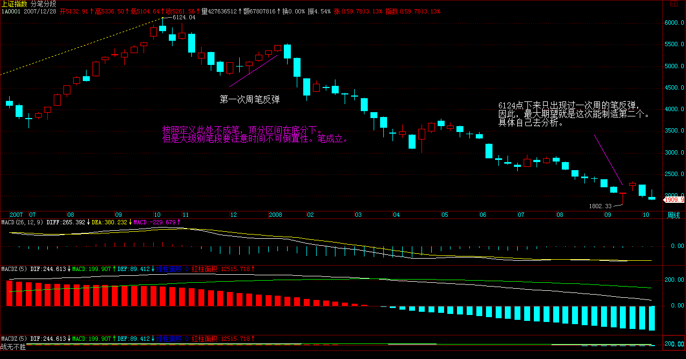
如果中美联手都搞不出第二次周笔反弹，那就成经典笑话了。但具体看图，不要有成见。
好了，最关键点已经说了，具体自己操作。
真正的震荡还在后面(2008-09-23 15:40:14)
昨天吃了片安定。没想到困到现在，10年前，一瓶下去，还可以继续去吃喝酒，真是没法比。真正的震荡在后面，有心理准备。5日线是短线关键，否则破了要补第二缺口。
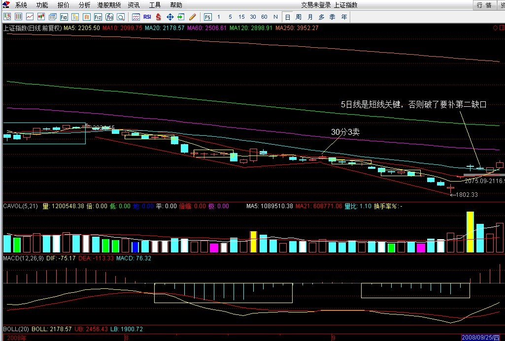
不想说了，困。
今天见到了神(2008-09-24 14:38:08)
中国烧钱，美国画饼，这叫中美联手，现在唯一值得看的闹剧是，美国会不会顺便把这些整持的套在这个位置。5日线，股票就这样了。
今天有幸，我弟在争吵中暴了一句，这几年美国鸡毛鸭血是他背后一手造成。本ID现在不敢面对了，已改称其为神，这日子真没法过了。
不说了，消业吧。
最终解脱了(2008-09-25 20:14:17)
股市不破5日线继续天经地义地上攻。这次主要注意是否背驰。现在，日笔是没有问题了。本ID说的周笔看有没有机会吧。关键看美国是否继续使坏了。
有些事情不想说了，今天在地下爬了几个小时，这就是调养，悲哀。一切解脱了，狗一样活者，还不如打破。亲情太重，无福消受，
不当美国佬的刹车片
(2008-09-26 10:32:38)
美国佬的把戏在本ID关于联手后陷阱的帖子中已经揭示，显然，王先生这次真的虚竹了一把，不过是太嫩那种，被美国佬耍了把。但美国佬的把戏还是蒙骗不了本ID，美国佬送的钱本ID要了，中国政府以后死顶如十几年前777的闹剧，那种伤心钱就算了。
后面的行情都是777精神的重演，就算继续，也是悲烈的。只要美国佬继续发狠，那闹剧可能就成悲剧，下陷阱后困兽犹斗的感觉不好呀。
这是一场国际性的大棋，自己想去吧，本ID不在其位，残躯一具，休养好了。
美国救市，闹剧一场。
(2008-10-05 17:01:24)
中国放假七天，美国参众两院来回折腾，引得旁观者一惊一乍，终于通过了一个饮鸠止渴的救市方案。但世界金融市场并没有太领情，当天多以暴跌报收，且不管本次救市效益如何，现在必须追问的是这就是说8500亿的救市基金难道是天上掉下来的馅饼？
本次世界经济大调整必须明确的是，最终的任务应该是彻底摧毁几十年来统治世界经济的美元体系，美国经济之所以走到这一步完全是自作自受，以前多次的经济危机都因为美元体系的存在，使美国能够把危机转嫁到全世界去，除了保持绝不正常的超前高消费和高消耗的经济生活模式，而这种模式已超越了地球及世界经济体系的承受力，这种美国消费世界埋单的格局到必须打破的时候。而这次美国故伎重演不过是企图继续维持原有的模式，而美国原有的模式以及这几十年来以美国为主导的世界经济格局不彻底改变，本次世界经济危机将没完没了，终难有解决之时。
现在8500亿的救市方案通过了，但这8500亿绝对不是天山掉下来的馅饼，它归根结底来源于美元泡沫的继续加大，本次世界经济危机的根源归根结底是美元已经彻底泡沫化，最大的风险和危机就是美元本身，而这8500亿不仅使美元的泡沫化加大，使得包括中国在内的其他国家美元资产外汇储备全面爆发危机。更会使得世界金融市场的流动性以乘数效应急速增大，使得石油、粮食、黄金等商品价格面临进一步的疯狂上涨，最终加速美元泡沫的破裂，从而带动商品泡沫的破裂。使得世界经济迅速倒退的危险境地。
面对这种危机的情况，中国应该采取正确态度是不跟风，绝不把自己绑在美国的战车上，而且目前的救市方式是极端错误的。政府不应该直接运用基金方式进入市场本身，而是应该积极培育和领导新的经济热点，使得流动性资金有更多可参与的领域，进而大量吸引外来正欲脱离美元体系的资金进入。只要控制好该类资金的有足够长的投资周期，提供良好的投资环境，使得资金沉淀于比美国更有前途的中国高速发展的潮流之中。那么大的蓄水池一新兴的、以人民币为基础的大的世界火车头才得以确立。美国的危机应该成为我们加速发展的契机。
现在特别要注意的是，目前政府介入股市的局面已经形成，因此必须好好把握好的推出时机，以免重蹈九十年代“七七七”救市的覆辙。
只要我们能以我为主，对美国的闹剧只看绝不参与，只防美国闹剧引发的经济危机对中国经济的伤害，那么我们就有足够的理由和信心在这场世界大风暴里保存实力，调整经济发展模式和结构。使得在风暴过后能迅速以新的姿态快速进入新的经济增长周期。
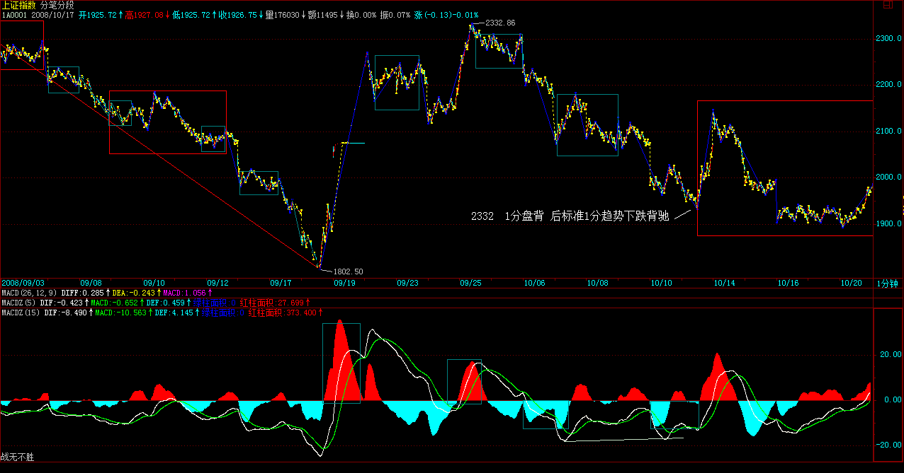
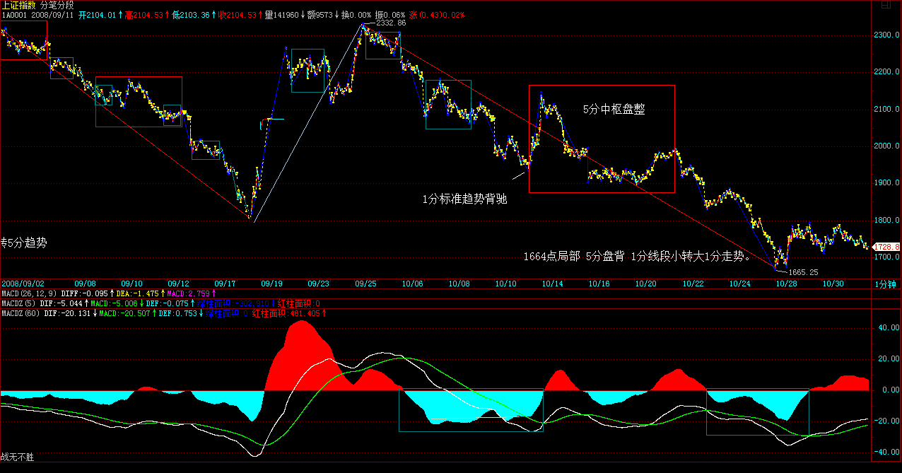
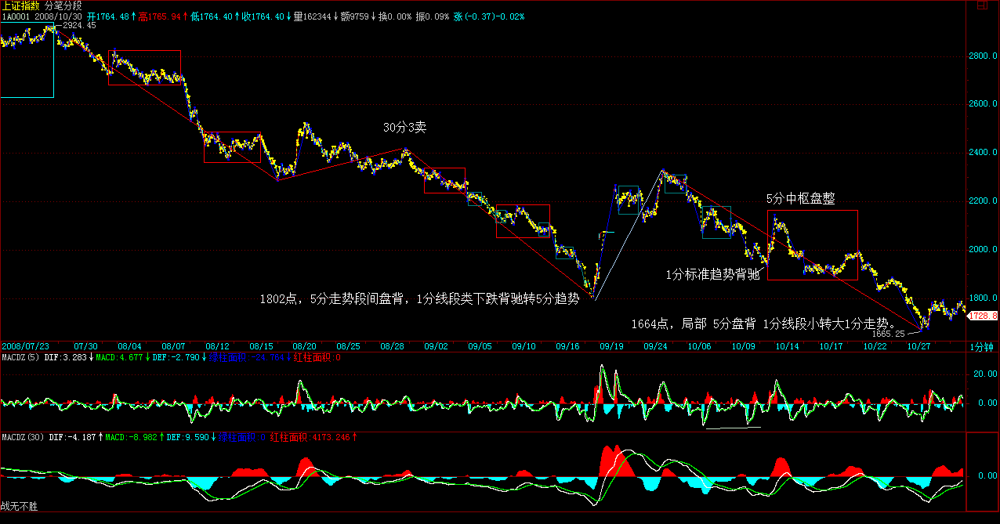
无话可说(2008-10-10 09:24:36)
继续看图\ 短跑,美国破万确实如期壮观,1019前后还有什么,等着.
顺便问好.
|